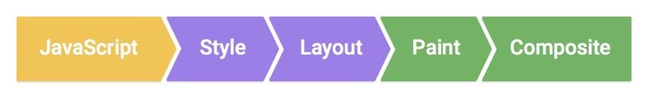

【前端性能】高性能滚动 scroll 及页面渲染优化
最近在研究页面渲染及web动画的性能问题，以及拜读《CSS SECRET》（CSS揭秘）这本大作。
本文主要想谈谈页面优化之滚动优化。
主要内容包括了为何需要优化滚动事件，滚动与页面渲染的关系，节流与防抖，pointer-events:none 优化滚动。因为本文涉及了很多很多基础，可以对照上面的知识点，选择性跳到相应地方阅读。
滚动优化的由来
滚动优化其实也不仅仅指滚动（scroll 事件），还包括了例如 resize 这类会频繁触发的事件。简单的看看：
1 2 3 4 | var i = 0;window.addEventListener('scroll',function(){ console.log(i++);},false); |
输出如下：
在绑定 scroll 、resize 这类事件时，当它发生时，它被触发的频次非常高，间隔很近。如果事件中涉及到大量的位置计算、DOM 操作、元素重绘等工作且这些工作无法在下一个 scroll 事件触发前完成，就会造成浏览器掉帧。加之用户鼠标滚动往往是连续的，就会持续触发 scroll 事件导致掉帧扩大、浏览器 CPU 使用率增加、用户体验受到影响。
在滚动事件中绑定回调应用场景也非常多，在图片的懒加载、下滑自动加载数据、侧边浮动导航栏等中有着广泛的应用。
当用户浏览网页时，拥有平滑滚动经常是被忽视但却是用户体验中至关重要的部分。当滚动表现正常时，用户就会感觉应用十分流畅，令人愉悦，反之，笨重不自然卡顿的滚动，则会给用户带来极大不舒爽的感觉。
滚动与页面渲染的关系
为什么滚动事件需要去优化？因为它影响了性能。那它影响了什么性能呢？额......这个就要从页面性能问题由什么决定说起。
我觉得搞技术一定要追本溯源，不要看到别人一篇文章说滚动事件会导致卡顿并说了一堆解决方案优化技巧就如获至宝奉为圭臬，我们需要的不是拿来主义而是批判主义，多去源头看看。
从问题出发，一步一步寻找到最后，就很容易找到问题的症结所在，只有这样得出的解决方法才容易记住。
说教了一堆废话，不喜欢的直接忽略哈，回到正题，要找到优化的入口就要知道问题出在哪里，对于页面优化而言，那么我们就要知道页面的渲染原理：
浏览器渲染原理我在我上一篇文章里也要详细的讲到，不过更多的是从动画渲染的角度去讲的：【Web动画】CSS3 3D 行星运转 && 浏览器渲染原理 。
想了想，还是再简单的描述下，我发现每次 review 这些知识点都有新的收获，这次换一张图，以 chrome 为例子，一个 Web 页面的展示，简单来说可以认为经历了以下下几个步骤：

-
JavaScript：一般来说，我们会使用 JavaScript 来实现一些视觉变化的效果。比如做一个动画或者往页面里添加一些 DOM 元素等。
-
Style：计算样式，这个过程是根据 CSS 选择器，对每个 DOM 元素匹配对应的 CSS 样式。这一步结束之后，就确定了每个 DOM 元素上该应用什么 CSS 样式规则。
-
Layout：布局，上一步确定了每个 DOM 元素的样式规则，这一步就是具体计算每个 DOM 元素最终在屏幕上显示的大小和位置。web 页面中元素的布局是相对的，因此一个元素的布局发生变化，会联动地引发其他元素的布局发生变化。比如，<body> 元素的宽度的变化会影响其子元素的宽度，其子元素宽度的变化也会继续对其孙子元素产生影响。因此对于浏览器来说，布局过程是经常发生的。
-
Paint：绘制，本质上就是填充像素的过程。包括绘制文字、颜色、图像、边框和阴影等，也就是一个 DOM 元素所有的可视效果。一般来说，这个绘制过程是在多个层上完成的。
-
Composite：渲染层合并，由上一步可知，对页面中 DOM 元素的绘制是在多个层上进行的。在每个层上完成绘制过程之后，浏览器会将所有层按照合理的顺序合并成一个图层，然后显示在屏幕上。对于有位置重叠的元素的页面，这个过程尤其重要，因为一旦图层的合并顺序出错，将会导致元素显示异常。
这里又涉及了层（GraphicsLayer）的概念，GraphicsLayer 层是作为纹理(texture)上传给 GPU 的，现在经常能看到说 GPU 硬件加速，就和所谓的层的概念密切相关。但是和本文的滚动优化相关性不大，有兴趣深入了解的可以自行 google 更多。
简单来说，网页生成的时候，至少会渲染（Layout+Paint）一次。用户访问的过程中，还会不断重新的重排（reflow）和重绘（repaint）。
其中，用户 scroll 和 resize 行为（即是滑动页面和改变窗口大小）会导致页面不断的重新渲染。
当你滚动页面时，浏览器可能会需要绘制这些层(有时也被称为合成层)里的一些像素。通过元素分组，当某个层的内容改变时，我们只需要更新该层的结构，并仅仅重绘和栅格化渲染层结构里变化的那一部分，而无需完全重绘。显然，如果当你滚动时，像视差网站(戳我看看)这样有东西在移动时，有可能在多层导致大面积的内容调整，这会导致大量的绘制工作。
防抖（Debouncing）和节流（Throttling）
scroll 事件本身会触发页面的重新渲染，同时 scroll 事件的 handler 又会被高频度的触发, 因此事件的 handler 内部不应该有复杂操作，例如 DOM 操作就不应该放在事件处理中。
针对此类高频度触发事件问题（例如页面 scroll ，屏幕 resize，监听用户输入等），下面介绍两种常用的解决方法，防抖和节流。
防抖（Debouncing）
防抖技术即是可以把多个顺序地调用合并成一次，也就是在一定时间内，规定事件被触发的次数。
通俗一点来说，看看下面这个简化的例子：
1 2 3 4 5 6 7 8 9 10 11 12 13 14 15 16 17 18 19 20 21 | // 简单的防抖动函数function debounce(func, wait, immediate) { // 定时器变量 var timeout; return function() { // 每次触发 scroll handler 时先清除定时器 clearTimeout(timeout); // 指定 xx ms 后触发真正想进行的操作 handler timeout = setTimeout(func, wait); };};// 实际想绑定在 scroll 事件上的 handlerfunction realFunc(){ console.log("Success");}// 采用了防抖动window.addEventListener('scroll',debounce(realFunc,500));// 没采用防抖动window.addEventListener('scroll',realFunc); |
上面简单的防抖的例子可以拿到浏览器下试一下，大概功能就是如果 500ms 内没有连续触发两次 scroll 事件，那么才会触发我们真正想在 scroll 事件中触发的函数。
上面的示例可以更好的封装一下：
1 2 3 4 5 6 7 8 9 10 11 12 13 14 15 16 17 18 19 20 21 22 | // 防抖动函数function debounce(func, wait, immediate) { var timeout; return function() { var context = this, args = arguments; var later = function() { timeout = null; if (!immediate) func.apply(context, args); }; var callNow = immediate && !timeout; clearTimeout(timeout); timeout = setTimeout(later, wait); if (callNow) func.apply(context, args); };};var myEfficientFn = debounce(function() { // 滚动中的真正的操作}, 250);// 绑定监听window.addEventListener('resize', myEfficientFn); |
节流（Throttling）
防抖函数确实不错，但是也存在问题，譬如图片的懒加载，我希望在下滑过程中图片不断的被加载出来，而不是只有当我停止下滑时候，图片才被加载出来。又或者下滑时候的数据的 ajax 请求加载也是同理。
这个时候，我们希望即使页面在不断被滚动，但是滚动 handler 也可以以一定的频率被触发（譬如 250ms 触发一次），这类场景，就要用到另一种技巧，称为节流函数（throttling）。
节流函数，只允许一个函数在 X 毫秒内执行一次。
与防抖相比，节流函数最主要的不同在于它保证在 X 毫秒内至少执行一次我们希望触发的事件 handler。
与防抖相比，节流函数多了一个 mustRun 属性，代表 mustRun 毫秒内，必然会触发一次 handler ，同样是利用定时器，看看简单的示例：
1 2 3 4 5 6 7 8 9 10 11 12 13 14 15 16 17 18 19 20 21 22 23 24 25 26 27 | // 简单的节流函数function throttle(func, wait, mustRun) { var timeout, startTime = new Date(); return function() { var context = this, args = arguments, curTime = new Date(); clearTimeout(timeout); // 如果达到了规定的触发时间间隔，触发 handler if(curTime - startTime >= mustRun){ func.apply(context,args); startTime = curTime; // 没达到触发间隔，重新设定定时器 }else{ timeout = setTimeout(func, wait); } };};// 实际想绑定在 scroll 事件上的 handlerfunction realFunc(){ console.log("Success");}// 采用了节流函数window.addEventListener('scroll',throttle(realFunc,500,1000)); |
上面简单的节流函数的例子可以拿到浏览器下试一下，大概功能就是如果在一段时间内 scroll 触发的间隔一直短于 500ms ，那么能保证事件我们希望调用的 handler 至少在 1000ms 内会触发一次。
使用 rAF（requestAnimationFrame）触发滚动事件
上面介绍的抖动与节流实现的方式都是借助了定时器 setTimeout ，但是如果页面只需要兼容高版本浏览器或应用在移动端，又或者页面需要追求高精度的效果，那么可以使用浏览器的原生方法 rAF（requestAnimationFrame）。
requestAnimationFrame
window.requestAnimationFrame() 这个方法是用来在页面重绘之前，通知浏览器调用一个指定的函数。这个方法接受一个函数为参，该函数会在重绘前调用。
rAF 常用于 web 动画的制作，用于准确控制页面的帧刷新渲染，让动画效果更加流畅，当然它的作用不仅仅局限于动画制作，我们可以利用它的特性将它视为一个定时器。（当然它不是定时器）
通常来说，rAF 被调用的频率是每秒 60 次，也就是 1000/60 ，触发频率大概是 16.7ms 。（当执行复杂操作时，当它发现无法维持 60fps 的频率时，它会把频率降低到 30fps 来保持帧数的稳定。）
简单而言，使用 requestAnimationFrame 来触发滚动事件，相当于上面的：
1 | throttle(func, xx, 1000/60) //xx 代表 xx ms内不会重复触发事件 handler |
简单的示例如下：
1 2 3 4 5 6 7 8 9 10 11 12 13 14 15 16 | var ticking = false; // rAF 触发锁function onScroll(){ if(!ticking) { requestAnimationFrame(realFunc); ticking = true; }}function realFunc(){ // do something... console.log("Success"); ticking = false;}// 滚动事件监听window.addEventListener('scroll', onScroll, false); |
上面简单的使用 rAF 的例子可以拿到浏览器下试一下，大概功能就是在滚动的过程中，保持以 16.7ms 的频率触发事件 handler。
使用 requestAnimationFrame 优缺点并存，首先我们不得不考虑它的兼容问题，其次因为它只能实现以 16.7ms 的频率来触发，代表它的可调节性十分差。但是相比 throttle(func, xx, 16.7) ，用于更复杂的场景时，rAF 可能效果更佳，性能更好。
总结一下
-
防抖动：防抖技术即是可以把多个顺序地调用合并成一次，也就是在一定时间内，规定事件被触发的次数。
-
节流函数：只允许一个函数在 X 毫秒内执行一次，只有当上一次函数执行后过了你规定的时间间隔，才能进行下一次该函数的调用。
-
rAF：16.7ms 触发一次 handler，降低了可控性，但是提升了性能和精确度。
简化 scroll 内的操作
上面介绍的方法都是如何去优化 scroll 事件的触发，避免 scroll 事件过度消耗资源的。
但是从本质上而言，我们应该尽量去精简 scroll 事件的 handler ，将一些变量的初始化、不依赖于滚动位置变化的计算等都应当在 scroll 事件外提前就绪。
建议如下：
避免在scroll 事件中修改样式属性 / 将样式操作从 scroll 事件中剥离
输入事件处理函数，比如 scroll / touch 事件的处理，都会在 requestAnimationFrame 之前被调用执行。
因此，如果你在 scroll 事件的处理函数中做了修改样式属性的操作，那么这些操作会被浏览器暂存起来。然后在调用 requestAnimationFrame 的时候，如果你在一开始做了读取样式属性的操作，那么这将会导致触发浏览器的强制同步布局。
滑动过程中尝试使用 pointer-events: 禁止鼠标事件
大部分人可能都不认识这个属性，嗯，那么它是干什么用的呢？
pointer-events 是一个 CSS 属性，可以有多个不同的值，属性的一部分值仅仅与 SVG 有关联，这里我们只关注 pointer-events: 的情况，大概的意思就是禁止鼠标行为，应用了该属性后，譬如鼠标点击，hover 等功能都将失效，即是元素不会成为鼠标事件的 target。
可以就近 F12 打开开发者工具面板，给 <body> 标签添加上 pointer-events:
那么它有什么用呢？
pointer-events: 可用来提高滚动时的帧频。的确，当滚动时，鼠标悬停在某些元素上，则触发其上的 hover 效果，然而这些影响通常不被用户注意，并多半导致滚动出现问题。对 body 元素应用 pointer-events: ，禁用了包括 hover 在内的鼠标事件，从而提高滚动性能。
1 2 3 | .disable-hover { pointer-events: none;} |
大概的做法就是在页面滚动的时候, 给 <body> 添加上 .disable-hover 样式，那么在滚动停止之前, 所有鼠标事件都将被禁止。当滚动结束之后，再移除该属性。
可以查看这个 demo 页面。
上面说 pointer-events: 段话摘自 pointer-events-MDN ，还专门有文章讲解过这个技术：
使用pointer-events:none实现60fps滚动 。
这就完了吗？没有，张鑫旭有一篇专门的文章，用来探讨 pointer-events:
结论见仁见智，使用 pointer-events:
- 实例解析防抖动（Debouncing）和节流阀（Throttling）
- 无线性能优化：Composite
- Javascript高性能动画与页面渲染
- Google Developers--渲染性能
- Web高性能动画
到此本文结束，如果还有什么疑问或者建议，可以多多交流，原创文章，文笔有限，才疏学浅，文中若有不正之处，万望告知。
如果本文对你有帮助，请点下推荐，写文章不容易。